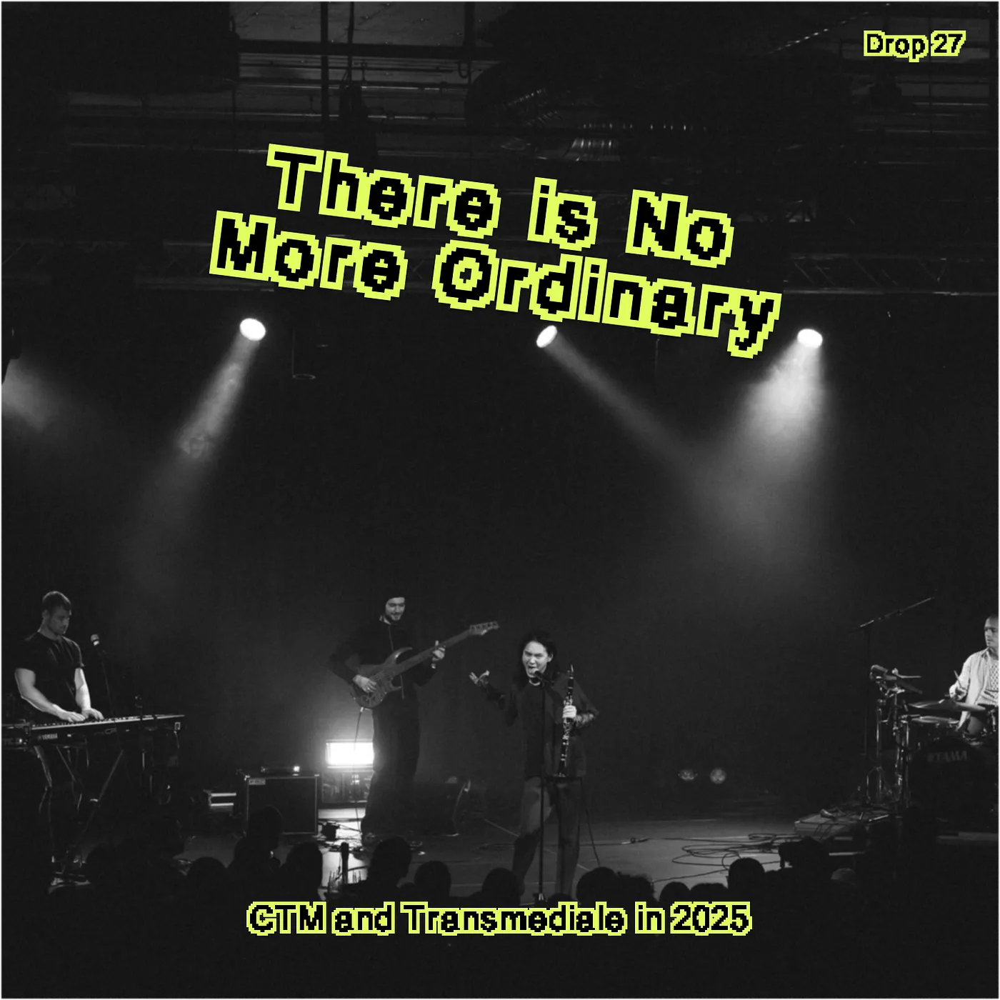
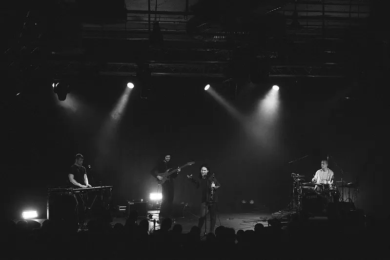
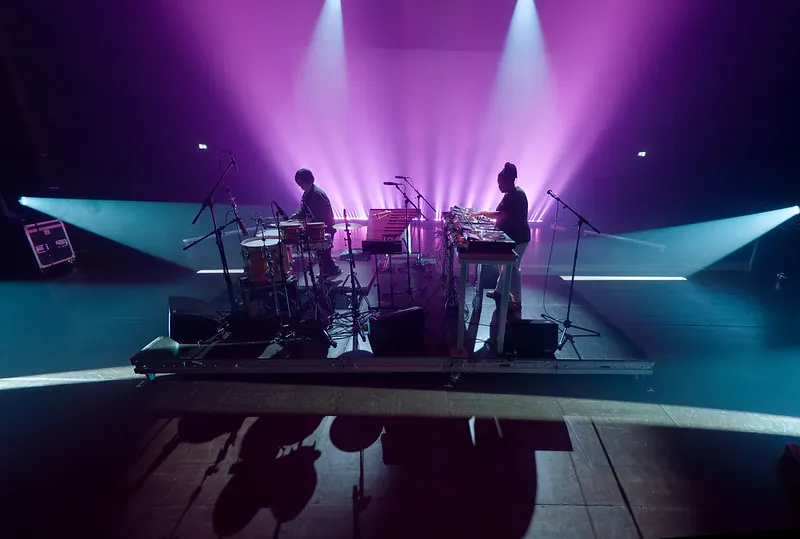
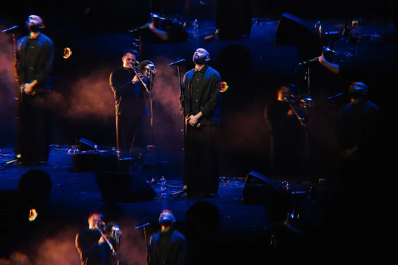
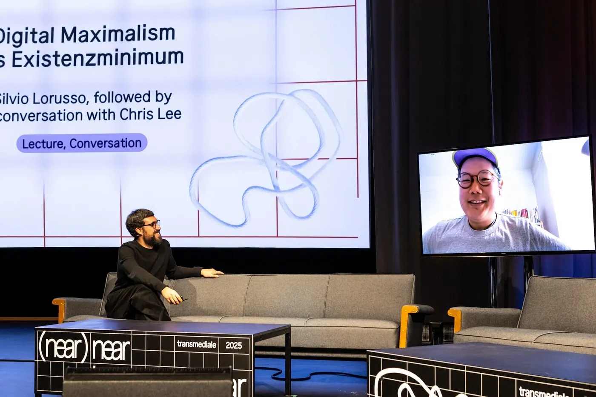
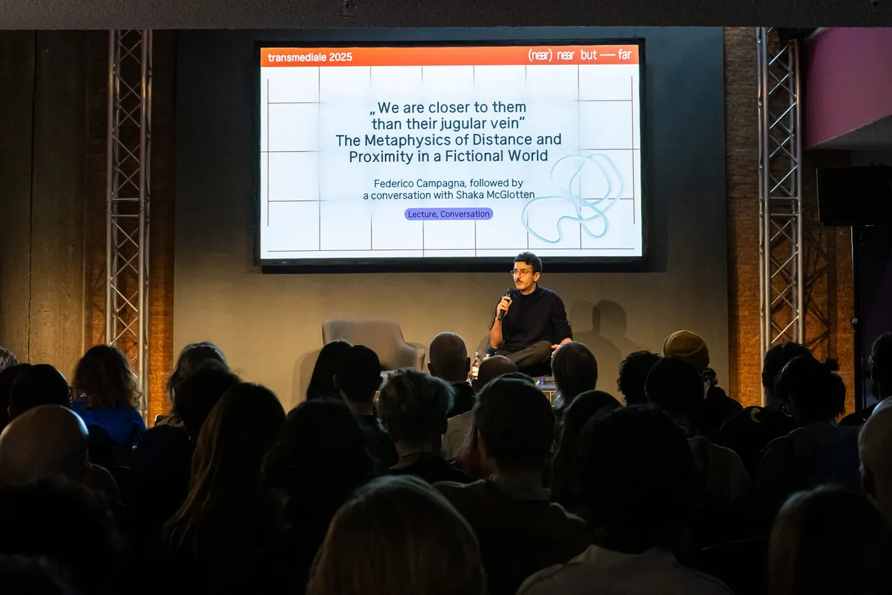
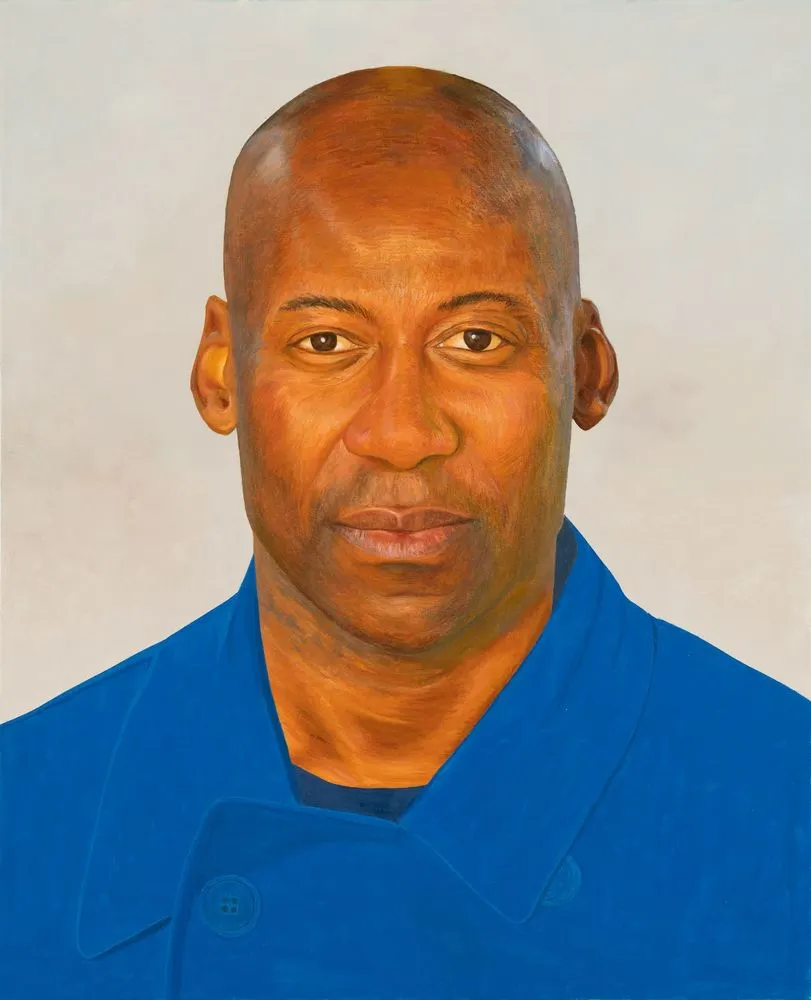

Drop #27 · February 12, 2025 · 10 min read
Hey everyone (▰˘◡˘▰)
Welcome back to Drops, REINCANTAMENTO’s newsletter.
Subscribers get access to exclusive content, experimental projects, and behind-the-scenes material. Your support keeps our work independent and accessible to all.

On CTM's opening concert, the cavernous expanse of silent green’s Betonhalle is ripped apart by local ensemble 33’s performance. Artist Ivan Cheng, the supergroup vocalist, modulates the space through their voice, from celestial heights to demonic depths. I watch as the other ensemble members unexpectedly begin to take turns with vocals, their high-pitched tones like trickster spirits claiming space.
The date is January 24th, 2025. Nine days ago, we lost David Lynch and I've spent the past week scrolling my social media feeds filled with his dreamlike imagery. Standing here now, I can't help but think how perfectly 33 would fit on the stage of Twin Peaks' Roadhouse, their performance tapping into that same slippery space between comfort and unease that Lynch staged so iconically.
But David Lynch’s visions are not the only surreal ones circulating in this week. Four days ago, Donald Trump's return to power in the United States casts another shadow of uncertainty across the global landscape. The pictures of the inauguration - a distasteful, techno-patriotic spectacle - are still impressed on my retina.

I find myself returning to words I read from anthropologist Michael Taussig in his Mastery of Non-Mastery, which also reads like a philosophical manual to survive a dark, surreal world:
It is a dangerous moment. You feel the world tremble. And it has been like this for a while. At least since 9/11. There is no more ordinary. The whole world is living not just another era but another culture. We cannot process what is happening, and that applies to both left and right on the political spectrum.
What is the role of adventurous art and music when the ordinary doesn't exist anymore? 33 aren't just opening the festival, they're setting the tone for my experience of the next ten days.
A Tale of Two Festivals
In 2025, CTM Festival marks its 26th edition, while transmediale reaches its 39th. "It's one adult lifetime", my friend A. tells me during our walk home in one of the festival’s nights. Over these decades, they have become ordinary landmarks within Berlin and the European cultural landscape, established institutions in their respective fields capable of attracting artists and audiences for decades.
Yet, “there is no more ordinary”, right? In Berlin, Germany, everything that we thought impossible in a liberal metropolis - censoring artists, banning languages or ethnicities from joining protests, arresting kids - happened in the long aftermath of 7th of October. In a climate of McCarthyism, the German cultural establishment, confronting its own crisis of identity, has decided to blindly follow far-right Israeli policies, with no regard for the consequences. It’s Zionismus Uber Alles.
This ideological positioning has materialized in concrete forms of censorship, particularly targeting voices that critique the ongoing genocide. The institutional apparatus – museums, academia, publicly-funded spaces – has become a site of contestation where the boundaries of permissible discourse are violently redrawn. The artistic community's response, calling for boycotting institutions like Berlinale or Berghain, turned cultural spaces into battlegrounds for the political struggle in Germany. The 2024 editions of CTM and transmediale became unwitting participants in this crisis, marking what many consider an annus horribilis for Berlin's cultural sphere.
As 2025 unfolds under the shadow of impending German elections, transmediale's curatorial theme "(near) near but far" emerges as an inadvertent commentary on the festivals’ own, complex position: they exist in the physical and affective proximities of the local context while trying to hold a resemblance of ordinarity.
CTM on the ground
I've always been drawn to how CTM claims Berlin's club landscape as its canvas, reshaping familiar spaces into something unrecognizable. Inside OXI's concrete maze on Saturday night, I watch as conventional ideas of "club night" dissolved around me. isaka and Spit Mask transform the main floor into something between theater and exorcism – the former skewering our Instagram-filtered reality, the latter staging a raw, bodily excavation.
The second floor - curated by the collective Metarave - sees Lechuga Zafiro orchestrating an underwater, rhythmic journey, evoking razor-shapes, and shamanic tempos, both profoundly ancient and terribly timely. The carefully constructed soundscape rewires the dancefloor nervous system: everybody feels like dancing beyond their normal capabilities.
The electrified crowd continued to tirelessly dance to Gadutra and Metarave’s founder Nuevo Prohibido in b2b with DJ LOUI FROM JUPITER4, in a deconstructed mess of Baile Funk, Guaracha, and Jungle. The Baile remix of “Dammi Falastini” - a Palestinian liberation song - sees the crowd exploding in chants. The Event makes its way to the dancefloor, in a spirit of meaningful communion.
Sunday night, Kuntari – a duo from Bandung – shows us why they call their sound "primalcore." Their tribal rhythms and processed howls somehow conjure the presence of an entire community from just two bodies. Later, Xiu Xiu pull us into a colder, more calculated universe: with a mastery of tension and release, Xiu Xiu confirm their role as graceful veterans.
On Tuesday, at Radialsystem , Nidia & Valentina's energy felt deliciously wrong for the auditorium setting. While they play their last record Estradas live, everybody starts dancing ignoring their assigned seats.

The reality of being a part-time writer caught up with me and I had to skip the rest of Tuesday and Wednesday's programming. There's something both impressive and exhausting about CTM's scope: 8 hours daily for 10 straight days. Can a festival of this scale include care and rest as part of their program?
On Thursday, well-rested and after a McLuhan lecture at transmediale, I get myself into Berghain for a mastodonic, 3-floors club night. The lineup lives up to its promises: alys(alys)alys and Rattlesnake set Panorama ablaze with their greatly executed latino-core, while Morgan Garrett and Murderpact's hybrid of rock band intensity and hardcore rave aesthetics turns Berghain into a metallic fever dream. aya, performing with MFO, seems to have found her final form as a cursed, next-level screamo-trapstar. A special mention to Deize Tigrona: a 2000s Black Brazilian MC that sets Panorama Bar on fire with her explosive and genuine talent.
On the following night at Alte Münze, AKA HEX (Aïsha Devi and Slickback's new collaboration) delivers my highlight, with their dualism of paradisiac hypnotism and bone-rattling bass. The closure of the festival with Abdullah Miniawy trio at Volksbuhne offers one, final catharthic hour of beauty: a gentle flirt with ghostly presences.

transmediale on the ground
transmediale main programs begins on Friday 31st at Haus der Kulturen der Welt. The festival efforts are focused on discursive format, with no official exhibition and little focus to media art and hacking practices. An absence that would later reveal its partial reasons both due to budget cuts and the new bizarre administrative leadership, already criticized by local artists in this open letter. Yet, I don’t want to focus solely on these limitations and risk to overlook the program's meaningful contributions.
For instance, the performance “The Inexorable Non-Player Character “by Nina Davies and 2girls1comp stages a playful interaction between screen space and performed action exploring automated means of production from multiple points of view. The piece explores multiple surfaces: a modded version of Grand Theft Auto 5 provides the visual environment for the video, while Google's Notebook LM appears to generate the dialogue running throughout the piece.
The performance is also a rare moment of humor in the program; humor that would have come back on Sunday with Ranjodh Singh Dhaliwal’s excavation on AI personas and chatbot roleplaying as well as Silvio Lorusso’s brilliant analysis of freelancer aesthetics in times of remote working and digital (over)presence. Subletting is the new art of the entreprecariat.

Given my ongoing research in the politics of digital withdrawal, I also appreciate the dialogue between philosopher Andrew Culp and Thomas Dekeyser, although it integrated a not-so-well-executed interactive format with the audience. How to reclaim portions of relative opacity and how to escape the all-too-bright corporate Internet panopticon?
Opacity emerges here not just as a theoretical concept but as a practice of consciousness and personal engagement - this is the real gift of Federico Campagna's talk. Speaking to an audience drowning in endless news feeds, Campagna pushes back against what he calls "today-ism": the seductive belief that our present moment is so unprecedented that looking to the past for guidance becomes futile. I recognize this impulse in myself, and yes, we are living through historic ruptures - as Campagna spoke, the German democracy was facing one of its darkest hours just hundreds of meters away in the Bundestag.
But the danger isn't in recognizing these moments' gravity; it's in surrendering to that paralyzing confusion that follows. This is precisely what our enemies seek - I think of Steve Bannon's idea of muzzle velocity - this disorientation that's eating us alive. With a gesture that feels both ancient and urgent, Campagna brings forward Iranian philosopher Mullah Sadra's wisdom, offering us a delicate balance: to neither fully embrace nor entirely reject the perceptual and linguistic fictions we inhabit, including visions for the end of the world.

Is transmediale's institutional bubble any less fictional than the worlds Campagna spoke of? This time, the bubble burst came, ironically, through art's most traditional medium painting that seemed almost definitely analog in this temple of new media. There it was: a portrait commissioned by transmediale curator Eugene Yiu Nam Cheung, brought to life by artist Hamishi Farah, its presence on stage mediated through Tobi Haslett's careful words. But the painting's time in the building was measured in minutes as if the institution's body was rejecting an unidentified object, something too dangerous to metabolize.

The painting depicted Joe Chialo, CDU Senator of Culture and Social Integration in the Berlin Senat. But a face is never just a face, is it? Especially not this one - a Black German politician who's become the public representation of Berlin's artistic suppression, the one signing orders to silence anyone daring to speak against Israeli genocide. A simple, humorous gesture capable of revealing once again the contradictions of institutional art in Germany. In Haslett’s words, published on Triple Canopy:
“Joe Chialo’s portrait is about Palestine, not just blackness, and certainly not just Joe. Which is to say that in this specific, hideously provincial national context, it’s a source of unmanageable negativity—and a force that accidentally refreshes the avant-garde project. Suddenly, we find ourselves in a very twentieth-century predicament: We can’t take the risk of exhibiting a painting of a right-wing politician. Given the outright censorious climate and the open bullying of state functionaries, we’re locked in the taut, old-school paradox of propriety, and we’ve come face-to-face with the institution of art.“
And so, concluding our analysis, we must acknowledge that no institution, however, established or ossified like transmediale, can truly keep its historical moment at a distance. Perhaps the real question is how to open our institutions, spaces, and stages to those who carry their time forward with pride and defiance. CTM's strongest musical moments achieved precisely this: upending conventional frameworks to carve out spaces of autonomous expression.
Beyond the structural differences between the art world and the music world, what remains is a partially realized desire, an escape route that pushes beyond the boundaries of permissible discourse: not just what is censored, but what is deemed reasonable. The future relevance of festivals will be measured by their capacity to navigate these tensions.